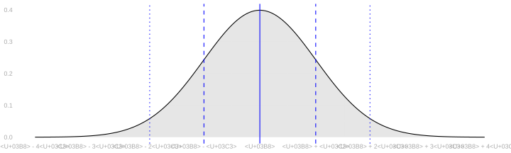
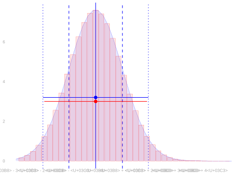
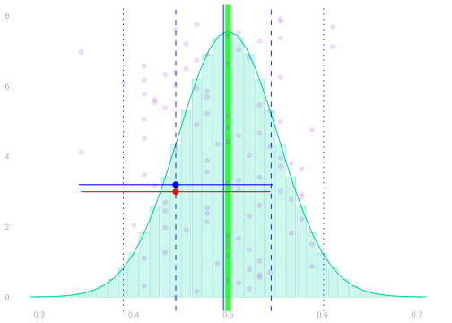

Normal Approximation and Sample Size Calculation
Calibration Using Normal Approximation


- Calibrating interval estimates using normal approximation is easy.
- You estimate the standard deviation of your point estimator.
- You go out ± 1.96 (estimated) standard deviations from your point estimate.
\[ \text{interval estimate} = \hat\theta \pm 1.96 \hat\sigma \]
- We’re choosing our interval’s width essentially the same way we always have.
- We’re still using the middle 95% of an estimate of the sample distribution.
- It just looks different because we have a convenient formula for that width.
- Above left, you can see two interval estimates superimposed on the sampling distribution of a sample proportion.
- The red one is calibrated using the binomial as before.
- The blue one is calibrated using normal approximation.
- Above right, you can see the binomial and normal sampling distribution estimates these are based on.
When This Works


- This all works if three things are true.
- The sampling distribution needs to be in the right place, i.e. centered on the estimation target.
- The sampling distribution needs to be approximately normal.
- The estimated sampling distribution has approximately the right width.
- The first is called unbiasedness of our point estimator.
- Most of the estimators we’ll talk about in this class are unbiased or almost unbiased.
- We’ll check this for the sample proportion in a minute.
- The second is something that the CLT tells us tends to happen, especially for large \(n\).
- Talking about the accuracy of normal approximation is interesting, but beyond the scope of this class.
- I’d need at least a couple weeks to teach you about what’s going on there.
- But you can take it as a given for most of the estimators we’ll study.
- The third amounts to getting a good estimate of our point estimator’s standard deviation.
- We’ll work on this, again for the sample proportion, later today.
- And we’ll talk about this for other estimators throughout the semester.
- It is, however, a bit of a pain. That’s one reason you might prefer the bootstrap.